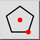
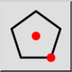
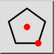
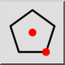

Polygon (Zentrum, Ecke)
Werkzeugleiste / Symbol:
 

Menü: Zeichnen > Form > Polygon (Zentrum, Ecke)
Schnelltasten: P, G, 1 | H, C
Kommandos: linepolygon | polygon | pg1
Werkzeugleiste / Symbol:
 

Menü: Zeichnen > Form > Polygon (Zentrum, Ecke)
Schnelltasten: P, G, 1 | H, C
Kommandos: linepolygon | polygon | pg1
Konstruiert ein regelmässiges Polygon mit gegebenem Zentrum und einer Ecke.